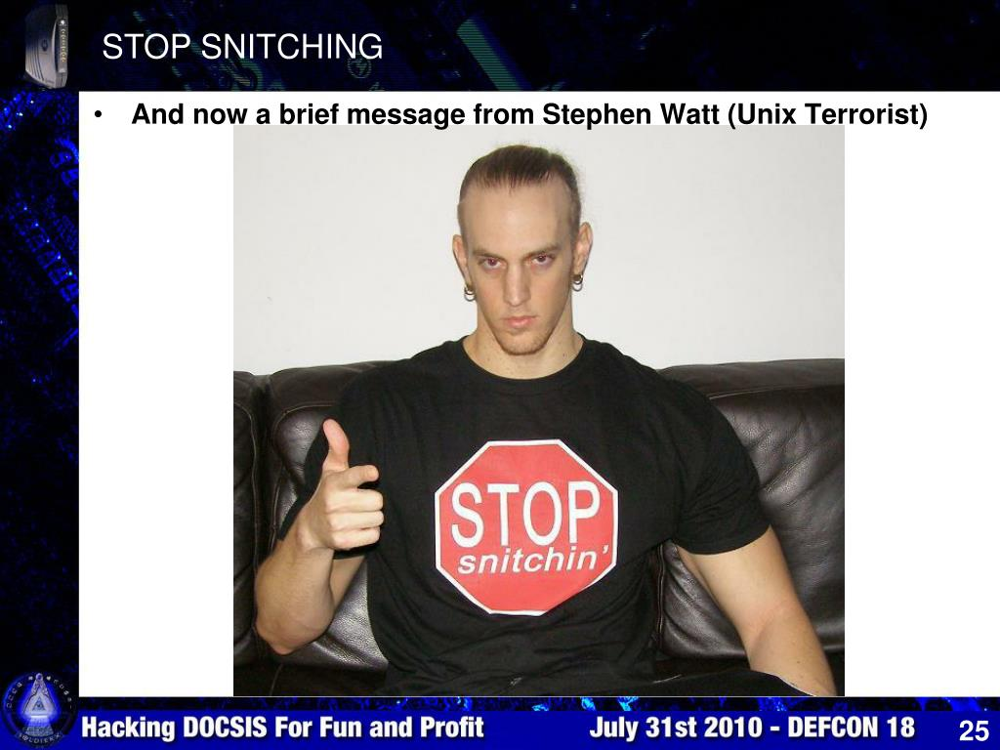

A 2026 Security Curriculum
Table of Contents
AI agents haven't fixed everything(yet)
Only special companies get access to the AI agents like Mythos that are not public which can find bugs so we will change our approach. Development is now creating 'lightweight formal models' and having AI implement the model without even needing to look at the code. AI still cannot do inductive logic where you see some pattern then make a 'leap' to a general idea it can only repeat old bugs that all of us already know exist. The old ways of binary exploitation, privilege escalation and other tricks of the trade will still work of course though require more creativity and obfuscation to hide from some realtime AI agent monitoring a system. Give it until 2027 and we'll see what happens but right now in mid 2026 you can still be a h4xxer just more and more paid security consulting is red teaming the AI itself to attempt to jail break it into doing bad things.
What won't change:
- Cryptography and writing secure crypto code so we will learn it.
- Hardware attacks like Rowhammer/rowpress which were never mitigated, attacks on the processor itself.
- Physical security isn't going to change yet either so I will cover some of that here too as I was recently taught by some fancy executive protection outfit as I had vacation time and chose to use it to learn from them how they do their job after I witnessed our director with these guys.
New curriculum
Software security
- Brown Topics in Software Security with open research problems that are still a problem no matter what agent Anthropic/OpenAI releases. We will learn Forge the 'lightweight formal methods' tool used at Brown and some other formal methods because these are going to take off now that all code is generated. You can break programs by modeling the logic too.
Cryptography
This is 'real' crypto and not the bozo world of web3 schemes.
- TU/e Cryptanalysis and Post Quantum Crypto 2023/22
- Recorded lectures/notes/assignments all open, we'll take whatever is the latest one
- Crypto Protocols in-depth plus Tanja YouTube lectures
- Engineering Crypto Software how to optimize ChaCha20, Poly1305 and ECDH/Curve25519
If you've ever been interested in breaking crypto this is your chance to learn. To understand this we need basic knowledge of sets, groups, vector spaces, and number theory which Tanja covers in her new book I'll do. It's also the exact same material taught here (groups/symmetry) and here (number theory) or use AI to teach you as we go.
Hardware security
QRD:
- Hardware no longer scales
- CPU logic/cores are broken 'silent data corruption' and likely exploitable
- DDRx attacks have never been fixed and are getting worse
- These attacks can be done remotely with webGL or attacking network cards
- Flash NAND/SSDs have the same problem and are exploitable
See this lecture from ETH's grad seminar on the future of computer architecture we will be taking the same prof's course later in this workshop. Rowhammer is now Rowpress you don't even need to perform repeated reads anymore which invalidates all the security protections manufacturers claim fixed the problem. MIT also has a processor attacking course we'll try.
The state of security
Open-source sabotage
This talk is from 2014 but nothing has changed in OSS development. Poul-Henning Kamp is involved in the FreeBSD project and here he imagines what would he do if he were tasked to 'control' or sabotage open source.
@5:10 is very interesting. It reminds me of back in the day when many people writing 'security Android ROMs' all disappeared and abandoned their projects and he imagines in the talk how legit developers are purposely bribed to do so being put on some nice salary at a 'friends of NSA' company.
@12:28 this is what we came for how modern open source projects can be derailed or infiltrated. @16:40 some mobile browser versions won't even let you use self-signed certs anymore even after clicking all the 'omg but are you aware of the risks!' buttons. The deceptive defaults he mentions I have been burned by many times.
OpenBSD so far is one of the few open projects I know about that doesn't (yet) accept agentic code simply because there is no copyright law that exists to license generated code. My bet is they simply move to formal methods
Security research is a thankless career
Egor Homakov a security researcher once wrote this post (now deleted) Why it sucks to be a Security Researcher. He is completely blackpilled and tells us how nobody cares or wants to fix the problems. If you raise the alarm you are threatened or dismissed because everyone just wants to keep the status quo and make it somebody else's problem later. He wrote multiple warnings to the Rails git repository and they hand-waved the problem away as 'impractical' and 'would never happen' so he started his security career by hacking the repository. They still denied the problem so he opened an issue 999 years in the future.
The professor of the ETH computer architecture course we'll do explains in one of the lectures how he had his 2013 paper describing a new DRAM attack rejected by 3 votes because they claimed 'industry has already solved this problem'. In 2026 this problem has not been solved. Mythos has not found a solution to this either.
Massive surveillance
Now canceled former Tor developer and 'Wikileaks associate' (pretty based title imho) Jacob Appelbaum quietly got a PhD from two of the world's premiere crypto experts DJ Bernstein and Tanja Lange at TU/e in the Netherlands. I don't know or care about any of the details of his fall from grace but he did write a dissertation so we may as well read it. The pdf is here or direct link here.
Skimming the intro this is more of a political manifesto instead of a thesis I'm surprised the school didn't demand he remove a lot of cringe here. In the section he calls bad mathematics he shames others on cruise control who take fed cash yet seems completely unaware he once worked for the Tor Project which is funded by US federal agencies like the DoD. If you follow DJ Bernstein then you know he amusingly rants on the IETF crypto working group mailing list whenever some NSA stooge proposes yet another badly designed or patent-trolled elliptic curve scheme so that to me is the definition of 'bad mathematics' trying to sneak in broken by design protocols. In 1.2 Thinking about the future some of the claims derived from the questionable sources he lists are so wild even Wikipedia jannies wouldn't have green-lighted this so I skipped most of it but the theme as far I can tell is crypto still works if it's designed and used correctly.
Section 2 Background on network protocols skimming this, OpenVPN is demonized as being the target of NSA weakening but OpenVPN code is so ridiculously bad and convoluted that they probably didn't have to do anything nefarious to it except promote its use.
Section 3 Background on cryptography if you look at Tanja Lange's crypto course page she recommends for general background this free online book so we can refer to it as we very lightly read this section. In the hash functions chapter a hash function h maps bit-strings of arbitrary but finite length to strings of fixed length so the domain of the function (inputs) maps to a range (outputs) that is many-to-one and the inputs are larger than the range or co-domain. This means there exists the possibility of collisions where 2 distinct pairs of inputs have the same output. Now you know how password hashing works, the hashes map to a plain text input but the Appelbaum thesis notes these password hash functions are designed to be extremely slow by purposely running inefficient calculations that require large amounts of contiguous memory so you can't easily brute force the hash by bombing it with millions of strings to guess passwords.
Block ciphers chapter seems to be a function that accepts as input a n-bit sized vector of plaintext and a key vector then a product transformation occurs to create ciphertext that is the same size of the input. If the input exceeds the size of the n-bit block then it's partitioned into same-size blocks and encrypted separately using a mode of operation to do so one old example is ECB or electronic-codebook mode. A symmetric key is shared via some Diffie-Hellman public key system we can learn later. The term 'nonce bit' is called IV or initialization vector in older books. Djb's ChaCha20 high-speed crypto and Poly1305 MAC is mentioned and detailed here if interested. Skimming the rest of this chapter there's an interesting comment about NIKE or non-interactive key exchange that has a deniability property where finding encrypted content that decrypts with someone else's key is still not definitive proof of any communication between each other.
Chapter 4 you probably already know most of this if you read the Snowden leaks and 2017 Wikileaks CIA files and there's a bunch of material here in this chapter on glowie PSYOPS strategies all laid out in chronological order. Applebaum goes totally off the rails again back into political manifesto territory. The later content going through all known shady nation-state malware and explaining how it works is worth reading. Even though a lot of these exploit 'products' in the leaked ANT catalog are from 10 years ago I doubt much has changed especially what data they were after so the methods change but the target is the same.
Chapter 5 GNU naming system has a good crash course on how DNS works. The NSA shenanigans detailed here are amusing they ran some global monitoring bot network to hide their DNS queries after an attack to admire their work and avoid blame. GNS is a GNUnet app which I like way more than all the blockchain nonsense going on right now requiring massive amounts of mining. Note to self look into GNUnet more.
Chapter 6 WireGuard tweak only works for some future quantum adversary meaning if traffic is vacuumed up and held to be broken years later then this tweak works otherwise an active quantum adversary you have to redesign the entire WireGuard protocol. That's if quantum computers aren't a total scam every company in the field always makes suspect promises of massive amounts of qubits then nothing happens.
Chapter 7 Vula has code to read here and is developed anonymously obviously because of Appelbaum's pariah status. I'll have to come back here after we get familiar with post-quantum crypto an automatic LAN encrypting scheme is a pretty awesome idea.
Chapter 8 REUNION is a PAKE for physical key encrypted key exchange, a kind of Assange-tier tradecraft meeting protocol for short message exchanging like a business card with contact info.
Incomplete history of h4xxing
In the early days, you basically stumbled into hacking/phreaking by accident by either curious discovery pressing a combo of commands or blowing a Cap'n Crunch free cereal box whistle into the phone handset and gaining complete control over the system. Techniques were traded for free there was no real security industry for software or even much organized criminal activity until the hacker crackdown. Most crime was stealing technical manuals and petty juvenile pranks on EFnet rivals or getting the numbers to a group of payphones in NYC, exploiting some office's PBX to call them for free, and some other hacker would answer and give you advice where to find information. That was the scene, a bunch of 'keyboard cowboys' and around this time Hackers the movie came out which besides the (fruit boots) inline skates was very realistic it should almost be a documentary like how you'd go to meets and they'd drill you what do you know.
Post-Mitnic conviction in the late 90s to mid 2000s this changed to a blackhat culture where cloning SIMs, cracking copyright protections and releasing pirate software (warez scene) took over. There was always a warez scene or some kind of DRM junk removal community but it became more monetized spawning a binary exploitation and remote box popping culture that still exchanged ideas and software for free but quickly a marketplace emerged for jacking financial data and 0-day auctions started springing up in the underground. The term itself 'zero day release' comes from the warez scene. That financial fraud scene only had a very few actual hackers grabbing databases or sniffing wireless point of sale devices for the most part the people involved were just common identity thieves who purchased devices to place on ATMs or hired staff to double swipe cards at restaurants and airports. The ultimate spot to double swipe cards was at the desk where 'airport improvement fees' were forced on departing travellers so you were on a plane for 8 hours while your card was being used and didn't notice.
Today these criminals have an opposite strategy instead of withdrawing millions in a single night from global ATMs and alerting Interpol of their existence they now charge micro transactions on hundreds of thousands of cards in hopes the mark doesn't notice but that's still not hacking it's just ID theft.
Anonymous was the 'hive' a large group of kids willing to coordinate and use the tools that blackhats gave them either for lelz or to cover for whatever they had just done with the same tool. "This attack signature is too unique I'm going to get caught for sure! Wait I know who to blame for this the hacker known as…"
The last of the true hackers
Obtain the book Hackers by Steven Levy and read the chapter The Last of the True Hackers. RMS spent two entire years, 16-18 hours per day (crashing out in the lab), reverse engineering software by himself that took a team of people to write. He did this because the hacker community at MIT labs was drained by some company who hired them away leaving RMS by himself as he refused to go. RMS even has papers on arxiv from back then on the Lisp research he was doing with Sussman and Abelson.
Stallman was routinely breaking into the lab servers and rewriting all the passwords to be blank so no student would be spied on by the administration. Up until MIT kicked him out a few years ago for a political crime he was still hacking their security system by cloning an access pass to campus so he could come and go anonymously. Now that we've read Appelbaum's thesis on mass surveillance this meme no longer seems like a meme anymore.
The last of the true blackhats

Stephen Huntley Watt is the only convicted blackhat who never snitched and never worked for the feds.
One of the most famous blackhats of the 2000s because of PR0J3KT M4YH3M a war against the whole so-called white hat industry. There was an anti-sec movement back then claiming that disclosure sites like bugtraq, security conferences and anti-virus corporations were creating the problem they were paid to solve by dumping what is essentially nuclear weapons to masses of global criminals free of charge. A classic method that still works today is to run a diff on whatever disclosed patch to reveal the exploit then write up a turn-key h4xxoring product and sell it on skiddy forums as it (still) takes months or sometimes years for people to update their systems so unpatched systems were wide open. Even the recent Pwn2Own competitions have this problem where there is a patch gap between Chrome and Chromium being patched so some have noticed the exploits from Pwn2Own will still work for some period after especially on any headless instances of these browsers because they run outside the usual browser sandbox.
A lot of project mayhem is detailed in ~el8 text files from 2001-2002 which are written in a style that you would expect from mostly teenage blackhats back then. They attacked every known white hat and company in the security industry and somehow avoided prison until his 'friend' got busted and snitched.
He was making a nice salary in NYC as a trading systems software developer (now called TradingScreen Imagine) and gave away for free a packet sniffing program to a fellow blackhat he knew since high school because that's how the hacker scene used to work you never charged money to other hackers. That other blackhat did a really stupid federal crime with it and snitched where he got the program from so Watt spent 2 years in fed prison for writing a single packet sniffer that he never deployed. He claimed on his Xwitter the only way he could get a job was to apply to a Ukraine company after prison and if you search around they are desperate for foreign remote devs in Kiev because of the war. Consider applying yourself. Last I heard he still owes the US gov $170m+ in ridiculous fines and works for DomainTools as a principal software engineer.
Max Ray Vision
Yes that is his real legal name. The judge at his trial called him 'the hacker of all hackers'. He took over the entire underground crime market in a single night breaking into the 4 biggest competitors and stealing their databases, emailing all users that they should join his site instead then shutting his competition down permanently. Some of these sites touted their uber security like requiring a signed cert handed out only to a few people to even connect to the server and he yoinked those certs anyway and broke in. His demise began when one of the sites he took over was a federal sting site and the feds weren't too happy about him ruining their entrapment op by exposing that the owner was using screen capturing software that only someone on a federal leash would use. Doing a grandiose public takedown and overnight becoming El Patron of global e-crime I'm sure gets you noticed by feds anyway.
Max although on supervised release now is still facing new charges claiming he used a phone at the prison to 'control drones and drop contraband in the prison' which is of course almost surely nonsense. Personal experience tells me there was probably some guy Max played cards/games with who pestered Max to tell him how some crime like that could work and Max obliged him but was not directly involved in the conspiracy. This person then got caught trying to do it themselves and of course snitched to blame it all on Max 'you think I came up with this I'm just a pawn it was this brilliant superhacker'.
Max used a lot of tricks like hiding his very popular marketplace inside somebody else's network. We'll learn about this later but I suspect he modified protocols that network admins would scan for like changing the rounds in ssh and creating an invisible protocol. Tricks like this allow to camoflauge the traffic as normal network traffic. The world's largest criminal market was hosted by unsuspecting corps and their incompetent network admins.
Max once broke into department of defense servers and patched a problem he found where they thanked him by giving him an 18 month fed prison sentence. He turned snitch for them but refused to sell out hackers at DEFCON so they told him nah you're going to serve your sentence. Fed prison is where he met advanced financial fraudsters and of course prison is just networking for criminals so he emerged from there with a new group of criminal associates and a personal conviction to drain every bank he could. Of course revenge and personal greed makes for bad business so he was eventually caught by his own associates ratting him out. Max sold stolen cards on his website under multiple names and through a guy he met in prison had a personal crew that would hit luxury boutiques and clean them out with Max's stolen cards then fence the goods.
How he got caught is interesting because after his real life and not virtual criminal associates snitched on him they followed him around to identify his safe house which he often changed up every few months. Max would lug in a large antenna and rent a condo somewhere under a fake name then use that antenna to break into surrounding networks and access his crime empire. He had set up his system with a dead man's switch he could use should any police raid his condo however they of course waited until he was passed out with everything switched on and there was no chance to erase anything. The feds had brought CMU grad students to the raid to pull all the crypto keys from memory as Max had bragged about his security protocols to the guys who got arrested so they knew what to expect.
ASTRA
There is a hacker called ASTRA who was revealed to be a 58 year-old retired mathematician living in Greece. He remotely broke into France's Dassault corporation which manufactures military aircraft and weapons and sold secrets worth $350 million from 2002 until 2008 to their competitors worldwide with the help of a global crime network. He was not an employee leaking information, he was not a 'contractor who's login didn't expire' or anything like that because he'd be in prison and his identity revealed. Nobody has ever revealed his identity because he likely was hacking OpenSSL or something they deemed too important to not know about so intel agencies retained him as a consultant. He was living under perfectly forged government identities in Athens (again prob OpenSSL 0day breaking into gov dbms and having them print him new IDs) and they never revealed how they caught him though likely it was following money or a lesser guy in his crime network was picked up and snitched. That's always the demise of everyone the money trail and being forced to work with real street criminals who always sell you out.
The lesson here is if you're going to do this then go for the olympic medal of hacking. However you just read a dissertation earlier by Appelbaum on how impossible it is to avoid the global surveillance state so should probably reconsider. In the age of AI these kinds of crimes are going to become extinct it will be extremely difficult to hide whatever e-crime you're doing and this has already manifested on Darknet markets that are being rolled up quickly these days.
Darknet OPSEC
One way of threat modeling is to simply write down a list of everything that can go wrong then think of ways to fail safely. This is critical in the age of AI agents.
- Tor
A disclaimer everyone ignores: does not work against an adversary with a global overview of the entire network aka the 5 Eyes Alliance. Tor is just one step in the anon h4xrz chain I would imagine you would want to move around often and not be a sitting target. We don't know how corrupt these agencies are there's nothing stopping them from noticing you then tipping off a family member in local law enforcement about whatever you're doing. Reminder the glowies (feds) have full access to whatever AI agent without any 'alignment' and they can almost certainly do magical things none of us know about to find idiots doing crime in the new agentic era. You should expect this and program your "hacking protest" accordingly.
- Transactions
A crypto ledger keeps transaction IDs forever. A list of things that can go wrong should include: what if all the transactions can be identified later, or even years later? Assume it is all able to be tracked. Should you have wallets filled with old private keys of prior transactions? What kind of logs are being kept by the full chain node you are running? How often was x amount of Monero moved from your evil wallet then shortly after you received nearly the same amount in cash from an exchange?
- Physical security
Max Vision had some kind of dead man's switch tied to his wrist when he was arrested that powered down his crime empire and had deployed physical and memory mitigations to prevent crypto key recovery of his loot of stolen card data. However he had no surveillance system in place to make use of that switch so no alarms or early warning detection like a camera or physical trip alarm of outside wherever he was staying. No way to react except to wake up and find himself surrounded with a gun pointed at his head and told not to move while they siphoned his memory for keys.
Sabu the Lulzsec guy turned informant could have also used some kind of physical security to keep himself from making bad decisions while wasted out of his mind such as a fail-safe router to always tunnel traffic automatically. If you don't know/remember he screwed up a single time and logged into a watched chat room without his usual precautions. Ross Ulbricht sat in a public library where feds could see him decrypting files and then snatch the laptop faster than he could react. A Ukranian hacker Maksik was lured to a vacation in Dubai and agents helped themselves to his laptop in his hotel room while he was at the bar downstairs. He never noticed the intrusion because he did not have any kind of physical security in his room or surveillance. The girl he was meeting at this bar/hotel was also an agent. That's how they always get you. Anyway that OP failed and later he was lured to Turkey by the same girl where he received 'rubber hose cryptanalysis'. Of all the hackers he's the most I feel sorry for maybe find where he is and write him if possible guy was a genius and is now serving the hardest possible time (well, at least he isn't drafted in the war).
- Forward secrecy
GnuPGP doesn't have forward secrecy which means a new key is continuously generated so if a key is compromised it can't be used to go back in time and open up everything else that was archived. Old keys will have to be revoked/deleted and new keys consistently made. Nobody will ever do this because of complacency and Moxie Marlinspike knew this that's why he made Signal by default use forward secrecy. Of course Signal has it's own problems it requires using a phone number and feds round up conspiracies all the time but maybe that's a good thing I don't want wacky terrorists plotting insane shit where I live. Moxie is very resistant to any kind of clandestine type crypto in his released software saying if you're in the game you can probably figure out what to do and instead he creates crypto for the masses as he knows 98% of normies just want their conversations to be private and not spied on 'easily'. Did Moxie even design any of Signal's protocols? He worked with a grad student in robotics who seemed to be the cryptography wizard and that guy didn't seek to be the face of Signal or shill political causes to virtue signal. Moxie seemed to bring real life security experience to the crypto wizard but is it all stolen valor is he another fraud in the security scene? Hah I'm just security clout chasing relax.
- Lawyers
How are you going to pay for a lawyer when they take all your money? I assume you aren't Sam Bankman-Fried with millionaire parents. Did you give a lawyer a retainer (hopefully) and reserve funds to hire prison consultants? The US feds have something like a 90+% conviction rate you should always plea guilty and then manipulate where they send you if you actually did the crime they accuse you of doing (which you did, cmon now).
Darksec OPSEC III
Every DNM market is getting busted now in 2026. The most advanced dark net market (DNM) I've ever seen (at the surface level it could have all been security theatre) was Archetype the admin was a German Max Vision type character who robbed other DNMs to start his own market like Max Vision did and he got busted too. If you don't know Archetype would spin up a new instance for every vendor and their top customers to avoid DDOS problems but it didn't work he's now arrested. He made many IRL mistakes like he was promoting himself as a 'startup funding VC' in Spain just mysteriously giving away millions in crypto with no provenance to the source of funds but still that's not how they got the guy. The way these sites make their DNM to be responsive without javascript was to hide CSS elements then when you click on something it reveals itself. Always look at the CSS inspector in your browser when you browse some DNM to learn how they engineer these things.
So how did it all go wrong for him. First they had the guy's central market IP somehow because remember Tor does not protect against the NSA or 5 Eyes Alliance who has a total overview of the entire network. A cynic would say but there's no way glowies would care about me but they do because money laundering was allowed on his DNM. Terrorists and ransomware crime outfits launder money so now it's on the radar of every fed department. You should know this before doing dirt. The German cops launched DDOS attacks against him to reveal his other servers and he apparently used traceable payments to fund these I'm guessing but not much intel has been released.
There is 2 legendary recent DNMs and the other was the Russian market Hydra who made over 3 billion dollars in transactions that did geo drops but all the staff got busted. Both are looking at life in prison so you should probably reconsider doing this if you thought it would easy money.
I think these style of DNMs are dead now and any future DNM crime will be some small compressed/encrypted dbms passed around in clearnet that can be opened locally with simple AI agent generated software to show the entire menu and images with someone controlling the updates to said dbms. This person(s) will live in a situation where they cannot be easily extradited. That does not mean you simply live in Russia because low level agency cooperation still happens between adversaries and the Secret Service or FBI will simply phone up their other Russian counterparts and say 'hey this guy has tons of money and is causing us problems go look him up'. You don't want to be the guy they look up to extract money out of. Someone doing this would have to be the cousin of the Mayor of Moscow or something, the would need political cover.
Prison for h4xxers
I was going to write a modern guide here on how awful a fed USP is but it's best you don't ever end up in one in the first place. Whatever ""hacktivism"" should not involve cashing out some ransomware crew, should never involve foreign exchange of any kind as that may be through a bank in the US you don't even know about, should never involve credit cards, and should not involve database selling of accounts or other identity theft. These are all things that they can use to claim jurisdiction and have you extradited to some nightmarish USP.
Physical Secmaxxing
With the rise of AI agents in the next 1-3 years everyone who has anything to do with OpenAI or Anthropic is going to be mercilessly spied on by foreign agents and criminals to steal the model weights. Already Agent 5 or Fable/Mythos is banned for export and it will only get more restricted as models become more advanced. Anyone involved in even minor roles will also have physical security problems because of all the black PR against AI.
Here is some of what executive protection offers and how they do it:
Covert Hostile surveillance
Even the most completely unhinged maniac will do some kind of physical hostile surveillance long before they come at you to find out your routine and the weaknesses in your security. They will do so from a vantage point which is a spot where the most amount of visual information can be gained about you without them being seen watching you. What this means is they will not be outside your front door they will set up away from any ring cams or any possibility of being detected while watching.
Identifying vantage points that can be used for hostile surveillance is called surveillance mapping and the art of detecting hostile surveillance in progress is called surveillance detection.
Surveillance detection
Surveillance detection is basically defined as detecting correlations. Everytime the person you protect (the principal) performs an action such as coming and going then you look to see if there is a correlation somewhere of someone else who is also performing any kind of action at the same time. It could be subtle like pretending to stare at a phone but they only ever enter text when the principal does an action. One action connects to another. You look to see who keeps reappearing in vantage points you have mapped out. Surveillance detection by executive protection outfits is usually done covertly using people the hostile would never suspect like a couple sitting at a restaurant. The bodyguards themselves also do surveillance detection at events watching the crowd for correlations like the principal is now moving to a new room and some guy picks up his phone, sends something, and leaves to be replaced by the next guy who will follow the principal. You watch that new guy and when the principal is heading towards a new area that guy also sends a message, leaves, and someone new appears. Of course to get good at surveillance detection you would have to get good at covert surveillance yourself but in general any kind of action that correlates which is done from within a previously mapped vantage point should be interpreted as hostile surveillance.
Professional security divides up everything into circles so there's the inner circle, such as the principal's house or the zone around the bodyguard while at an event, and the outer circles where you do surveillance detection. Normally in the outer circle they will break up everything into numbered zones then give names to everything static in that zone so you can remember when something changed like a new car has appeared.
The good news is your security team no matter how amateur will easily notice the vast majority of hostile surveillance because everyone is bad at this EXCEPT organized crime and private investigators/glowies. Why would organize crime target you? Because they think you have cryptobux or they want to extort you via threats which is the exact same reasons that executives at corporations hire personal security. Why would a PI be watching you because a stalker hired them, or a foreign regime, or a crime group.
Professionals like PIs and nation state spies doing hostile surveillance are much more sophisticated because the first thing such a person is going to do is study the environment around the principal and identify the best primary vantage points. They will never physically be in that spot until they have researched it completely from a secondary vantage point to study their primary vantage point. This means they will be watching the people who come and go from the primary vantage point, the routines of traffic or deliveries, every bit of information about that preferred vantage point will be studied so they can slide on in there one day perfectly blending in with the rest of the environment. You would catch them because hopefully you already performed security mapping which identified all these areas so when someone new shows up you know to focus on them watching for correlations.
Once surveillance detection teams have identified someone hostile they need to let them know that they know. The hostile will have a valid excuse for being there they have rehearsed if confronted so instead all security needs to do is give a signal to them indicating they have been noticed which means they have been exposed. A simple head nod and signal 'I see you' or sometimes approaching them and asking a question like 'do you need any assistance' is all that is needed. A normal person would brush this off but someone nervous with surging adrenaline because they're doing dirt is going to panic right then and there and abandon whatever plan they had because now you've seen them.
Surveillance detection route
When you leave an event or the airport you don't want someone following you home so select a route to expose them following you. It needs to be some kind of natural deviation from your normal route or routine but not so isolated they avoid following for fear of being exposed. You will do lot's of short and long stops during this detection route and anyone else stopping can be identified because any surveillance detection team will be able to notice the same cars that keep reappearing in new locations.
The reason you don't want to simply lose them by going somewhere isolated is now they know what your vehicle looks like so they may reappear and start following you later. A professional executive security detail would have private investigator state issued permits to perform counter surveillance to find out who this person following is. It's technically illegal for you to surveil some maniac stalking you without a license to do so. That's the state of our laws.
Of course we now have entire discord channels and telegrams dedicated to tracking celebrities and streamers where minutes after a selfie is posted to instagram with a tag #MrBeast or whatever the location is discovered and small armies of stalkers then try and hack surrounding insecure cameras with known flaws or default passwords. The goal is to find more information such as the car the celebrity or streamer is using so it can be tracked by physical hostile surveillance. A way to counter this is fake information can be seeded so the principal should take selfies with friends and arrange for them to upload later when the principal is already at a different location. If someone on the street requests a photo you have roughly 4 minutes to get out of there before this information is spread everywhere.
Travel security
Here is the scenario. You are a female OpenAI employee (or celebrity, or streamer, or anyone really these days) and you want to attend some event in another city. You book your hotel and a bodyguard for the event but you are worried about a stalker following you back to your hotel or a hostile guest or employee at that hotel. First off your security should be using a surveillance detection route and not proceeding directly to your hotel. Second you don't use an airbnb you use a hotel with security and any modern hotel that isn't a garbage dump is going to be safe.
Plan out scenarios yourself what you would do if you were the stalker. A very bad plan would be to follow you into the elevator and wait for you to swipe your hotel card and choose the floor. The obvious way to try this trick is to pretend to be on a phone talking to someone and waste time fumbling around 'where did my card go'. This is defeated by almost all women who will hold the elevator door open making sure everyone has swiped their card first and chosen a floor before they do. The streamer may even have the conference bodyguard still with them walking them to their room so the odds of the stalker being able to pull this off with you in the elevator at the same time is very slim they won't even try it unless completely insane or intoxicated and hotel security will get them right away in the lobby.
Instead this is likely to be a much more sophisticated plan involving hostile surveillance. The stalker would follow you back to the hotel but they would perform lobby surveillance to see what floor you got off as all elevators snitch to everyone which floors they are currently at. If it was numerous floors they'd note all those floors. They would then sit in the lounge or wherever there is a vantage point of seeing the elevators so they can notice anyone who comes and goes to the same floor you got off on on. Eventually a few of those people they marked as being on your floor will return to the lobby for something like picking up a delivery or getting a drink in the lounge and THEN they would try that 'dang where I did place my security pass' trick in the elevator with someone who is male and won't be suspect of another male following them off the elevator. Now the stalker can pretend to use their phone and pace around the hallway seeing if they can hear your distinctive voice through the door then impersonate staff and knock on your door. If you brought a single person with you to do surveillance detection of the lobby or the hotel bar after you've arrived they would notice this person right away.
Bodyguards
There is many services where you can rent event and personal bodyguards ranging from basic drivers (uber with guns) or professional bodyguards to even embassy tier private security but if you can't afford the $500 or more per day they typically charge then you can make your own security team.
First off your bodyguard needs basic state licensing. In California they call this the 'guard card' and certification can be achieved remotely online for any state in the US. If you are a bodyguard that doesn't have this then make sure you tell anyone who asks you are a just a friend or camera guy who got involved because if you defend your primary without a license you can go to jail or be sued. No convention will let you in either as security without some kind of license.
Whoever you hire to do this needs to be able to control themselves and hiring your brother or boyfriend to do this is a bad idea because they're going to thrash anyone causing problems and professional security can't do that in fact most security never needs to even touch someone hostile and deters shenanigans simply by being there or acting as a human shield.
You may be like me and think well I'm a male and can handle myself easily but many of these stalkers of executives have a different goal which is to extract money out of you via a lawsuit. Someone stepping to you will have a friend with a camera somewhere collecting evidence. If you have at least one person there with you licensed then they can (within reason) tool that guy in the street and legally be exempt from any problems.
Home security
Almost every major streamer, pro athlete or celebrity has ended up with a 'tier 4 subscriber' getting inside their house or worse a robbery crew like the Amouranth home invasion. Amouranth has a gun but she didn't have time to get it they were already in her room by the time she woke up and realized what was going on.
Sometimes it's just random maniacs and not even anyone who knows you like what happened to Filian, a ridiculous vtuber, who was stalked by an uber eats driver after he saw her uber profile pic.
The easiest to secure if you are high profile is a rented condo with 24/7 concierge in the lobby and at least some kind of access controls on who can use the elevator. This will be much cheaper to secure than a detached house and you can keep moving every year to throw off the stalkers if you lease. Of course the emergency stairs can be accessed from the lobby and they can climb up to your floor and break through any locks on the upper floor stair doors without any alarms going off therefore you would place an active deterrence camera in there (explained below) so anyone approaching runs into that camera shining a light on them. You want to pretend that you never moved and the room you stream from should look identical with every move. The very popular streamers who appear to stream from a house they don't actually live there they use the house as a prop no matter what they claim and likely armed security downstairs so they don't get any surprise visitors.
South African home security
This is how they do security for homes in South Africa and some of this advice we can use here for both an apartment and a detached property. It costs way less than you think. Everything they do is to delay the attack and create an early warning for the home owner so they can call for backup or so they can get a weapon as the goal of all criminals is to get the jump on you. Once the element of surprise is gone criminals will usually give up and not risk getting shot at by you but that of course assumes they are sane and not wasted out of their mind on drugs.
Electric fencing is common for houses in South Africa. These are specialized security fencing not a wildlife style electric fence here we can see any kind of disruption signals a loud audible alarm and also zaps the intruder. These properly installed by a professional company are much cheaper than you think and will only consume the same energy of what a lightbulb would consume. They also use another climbing deterrent like stegastrips these are hard plastic to avoid interference with the electric fence and it also deters wildlife from jumping your fence. You can have an outer normal fence then inside your property have the electric fence it's legal in most countries but obviously check first.
This guy 'Deysel Farm' will show us the rest of standard South African home security @4:26 they use dogs inside the perimeter fencing but unfortunately criminals poison them and look at these statistics 40 dogs in a single day! @4:58 this is a backyard motion detector they call these wireless beams and they are very effective and cheap. When it's turned on it creates a net of sensors to alert you to someone running up on your property. To avoid having these being jammed you want one's sold that aren't using the cheapo unlicensed frequencies like 433 MHz but I'll talk about jamming more later. You can set these up inside too by windows to detect movement or cover your entire living room while you sleep. They are designed not to get triggered by dogs or birds.
@6:16 he's got a back patio gate, @7:16 a door gate so they can't push their way in, @7:24 the sliding door even has a gate. There's also security mesh you can get installed now that don't look like bars on the doors or windows but these old school steel bar security doors take longer to breach whereas the security mesh if they have a portable grinder they're cutting through that quickly. Remember the whole idea is just layers of security to alert you so you aren't surprised.
This is something you probably didn't expect @8:52 the internal hallway gates that seal off the bedrooms this is the last resort security also called 'the rape gate' so you can wake up in time to fetch a gun and start raining bullets at them down the hallway because they're not coming in there for any economic reasons.
Jamming
Criminals today use jammers all the time especially the crews running around LA robbing celebrity houses. The way jamming works is they bombard the frequency with noise so cameras and motion detector beams can't tell which signal is which and it works best if they know the freq your security is on which in most consumer security products is a common wi-fi band or 433-Mhz for something like a wireless infared beam. A non-military jammer will not stop a cell signal fully so if your security is all 3/4/5G there may be glitches but no effective jamming.
Any security company who installs wireless beams or cameras should also have basic jamming countermeasures like if no periodic handshake is exchanged between the beams and the base station after a certain amount of time then the alarm is raised. Another countermeasure is simply detecting too much noise in the freq so hopping to another freq or activating the alarm.
A slick countermeasure would also be to obfuscate and fool the criminals by attaching fake stickers or identifiers to these security beams and cameras so when they perform hostile surveillance to learn about your property they research the wrong equipment. You could also put a wifi doorbell cam visible in the front connected by wifi and they will be distracted by that and try and jam it ignoring the other security on separate frequencies. If you have google nest cams or a ring cam then make sure you've changed the password to something that can't easily be guessed that's how those stalker discord servers follow celebrities around via insecure doorbell cams.
Most break in crews today will send in a girl to knock on the door and with sleight of hand place a spy cam somewhere there who's only purpose is to spy on your security equipment and time the people coming in and out.
Costs
Any steel security door you want it installed by a security company not some random contractor and will cost around $1000 or $2000 for a security screen/mesh door.
Lorex or Reolink style cameras that are wired with dvr that can't be jammed can be bought for $200-$1k depending how many cameras you want or size of dvr. Wifi or 3/4/5G active deterrence cams are $90 to start out with if you can't afford the wired cameras. The term active deterrence just means the camera moves and shines a light on the intruder implying the alarm has been raised. Some of these have a recording that plays too telling them to get out of here.
Wireless outdoor infrared beams can be dirt cheap if you choose a common freq like 433mhz or around $300 for something with a freq selector or anti-jamming countermeasures. When triggered these can do anything like call a private security company, activate loud alarms, activate lights, anything to scare off someone running through your yard or up the driveway.
Home security case study
Let's look at some homes and try and secure them.
Here is Amouranth's security breakdown who is a twitch streamer that is basically some kind of tittycow with an army of simps. She apparently showed on stream a crypto wallet with a bunch of money and that was all it took to set the robbery in motion.
They pried open her wooden fence and came running into the yard. The google nest cam they had there didn't work. A wireless beam alarm would've helped here to blanket this yard in motion detection. As you can see the dogs were pretty much useless and they smashed their way inside finally they shot her bedroom door and kicked it in. She definitely could have installed an inside hallway gate here like South Africans do in order to lock out the bedrooms giving her more time to fetch her gun.
These guys did not just arrive and pry open the fence they would have cased the property first for a week. You want to determine the vantage points around your property and point cameras there. Spend a day approaching your property and finding the spot where you can gain the most information yet not be seen directly by any visible home security or windows/doors. The person would not even want to drive past your house to risk being on a camera during intel gathering stages so will approach but not ever come into the obvious field of view. You of course are not going to be watching security footage on fast forward all day waiting to see who shows up in the vantage points but an AI can do this now and the entire point is so if something does happen you have them on camera and hopefully pics of their vehicle too. They may through hostile surveillance notice you have cameras pointed at them too and give up for an easier target.
Opsec
Operational security is preventing little crumbs of information that can be assembled from many sources to doxx you. If you are an executive doing multiple zoom/teams meetings assume these streams are compromised and act like you're doing a live public stream avoiding any kind of opsec leak.
What exactly this means is while you stream live no outside sounds should be be heard like someone driving around honking trying to pinpoint your location and no real windows in the background where you can see landmarks. Don't rely on background blurring these fail all the time.
Here's pokimane talking about how she has to hire people to remove every picture of a new property she moves into and other efforts to conceal any unique features.
Make a dump button
Most of us are now live broadcasting now in some form with zoom/teams meetings and traditional broadcast media for decades have used a delay so they can push a dump button and block any idiots harassing the cameras or to prevent personal identifying info from being leaked accidentally on live broadcasts. If you use OBS or Open Broadcasting Studio this is how you make a primitive dump button you stack delays and either make a keyboard shortcut or use Bitfocus Companion to make actual buttons and now can blur the video or kill the audio of your stream with a button like Ethan Klein has. This can work for any software.
Athlete Airport stalkers
Here's another case study.
'Everytime I got to the airport a group of at least 10 men are waiting for me demanding autographs'. This is not a new scam it's been going years and primarily targets solo travelling female athletes.
These guys are all convicts and scumbags who buy dummy tickets usually from Orbitz or Expedia anything that says '24 hours free cancellation'. All of them are working with someone who has access to reservations in order to leak them names of normally solo female college atheletes and gymnasts because those signatures are the most collectable autographs. They then mass produce items with their signature on it and sell the original on ebay. Paparazzi do this too buying names and using dummy tickets to follow celebrities around photographing them in the security clearance area. You'd be surprised how low security airline reservation software is anyone working in a 3rd party mall kiosk selling tickets likely can get a manifest with names on it and there's probably even services for this on the dark web.
The way you deal with them if female is immediately start filming them and say loudly these men are stalking me to get security on them. You also book with airport VIP services aka 'airline concierge' where this service meets you at the gate, escorts you all the way through the terminal directly to a waiting vehicle so no getting swarmed at the baggage claim by these fools or running into a crowd of stalkers outside the terminal.
Countries that pull up
There's a few countries you likely don't know about that will send someone after you. This is called 'extraterritorial assassinations'. This only affects so-called 'journalists' that repeatedly show the dirt sheets on those regimes and anyone with influence who then decides to call out that their government persistently on their social media. I'm including this here in case you're some executive at a famous company and you think you can talk shit about these governments or you run a popular stream/youtube channel and you think nah they'll never show up here… right?
These countries aren't what you expect like you can make fun of Russia all you want, make fun of China all you want, talk all the dirt about the US or Israel and noone cares. You can show all the dirt sheets for Xi or Putin and they dont' care.
Some do care though and they pull up and it doesn't matter where you live.
You can be an 'activist' against the Russian government in Moscow all you want but targeting the Caucuses usually leads to doom. They always use a girl to lure you somewhere then you discover a bunch of goons waiting for you. They operate globally though mostly in Europe but I wouldn't take the chance. This even applies to obscure caucus cities like Nalchik. Reminder this doesn't mean you say how poor they are or anything it means you are specifically meddling in internal affairs and calling out the merciless warlods who run these areas. They're going to pull up on you.
The dictator of Rwanda will roll your shit up if you talk any persistent dirt and he doesn't care at all where you live tons of people have had their shit pilled by Rwanda globally. The leader even laughs about this in interviews much to the chagrin of all journos everywhere but who's going to stop him? Not me, not you, he doesn't care you're getting pulled up on.
The hindu nationalist PM of jeetland will pull up and shoot you and this has already happened everywhere especially in Canada where seperatist movements are allowed refugee status. They also beat 'journalists' with pipes that talk persistent dirt or try some kind of separatist clownery content about the regime there. They harass YouTubers too as a warning but it's a real warning not a joke. Yes you can make all the jokes about India but if you start with persistent content about how the PM needs to go well he's going to give some local gang in your city some money to visit you and once again who's going to stop him? Not the UN, not our feeble western govs. Where I grew up there was this nothingburger dissident paper that talked trash about India and the guy who published it got jumped by regime goons who flew in and left the country before police even knew what was happening.
You know how femanons complain they go to a country and get harassed by locals and are scared to go alone however Asmara is a city where no women will ever be harassed even at 3am walking in the street by themselves. Why? Because it's a merciless North Korean-esque dictatorship and if you talk trash about the regime they will pull up anywhere on earth. The regime there will not tolerate you making money online from calling them out and clout chasing.
This country has extradition treaties with your country that you don't know about and if you slander the royal family there they will extradite you. Many online 'travel influencers' who said something about Thailand's royalty has ended up arrested in Singapore/Cambodia/Taiwan etc., and was extradited there to serve hard time. This is stuff you need to know about if you're going to do any kind of political ''''hacktivism''', crime or other shit that because some of them will not just take it dry and will get you if you're caught slipping. You talked mad dirt about the Prince online 5 years ago and now you want to visit Vietnam? Surprise goons have arrived to take you to Thailand.
This is basically the list of nations you should not foolishly target for any h4xxoring scheme or social misinformation everywhere else doesn't matter if you don't live there. Imagine talking mad amounts of dirt about Eritrea some 'third world country' you know won't do shit and then you find out they pulled up on you in some random suburb in North America or Europe.
15-213 Computer Systems
This is the current CMU computer systems intro course. We still need to know this even if in sometime mid-2027 some super agent is going to do 100% of programming. This is because x86 architecture is not going away anytime soon as that costs money to replace. Any new or future architecture will be similar to the x86 model too with virtual memory and networks so we may as well learn it ourselves before we study binary exploitation.
Obtain CS:APP3e
Instructions
- Proceed to SLUM the shadow library uptime monitor
- Skip 'overall health status'
- Click on any Anna's Archive link or Library Genesis+ link that is working
- Search for this book 3rd edition
- Get the 'global edition' like I've done here
- Alternatively you can buy the global edition for $20 on Abe Books
- The labs students do are all here
The global edition solutions have been purposely sabotaged by the publisher so students would be forced to buy the (very expensive) North American version which only has garbage quality pirate scans so unless you want to download a black and white shit copy just use the global edition. I own that edition and the chapter content is identical, most of the problem writeups are identical just randomized order. It's only the solutions that are cooked so who cares it's not like you can't compile these programs and check yourself.
Anyway I will go through every single problem in the global edition here. I'm also doing the chapter on Y86-64.
Bits, Bytes, and Integers 1
Normally I try and avoid long lectures but in this case they're critical because the book is so technically dense you will get lost immediately especially when we start learning floating point. This prof Randy Bryant is sometimes unintentionally hilarious too.
Watch the second lecture. If you want the full CMU version then try this playlist and the lecture we are watching is here where you can switch between the board and the slides. If you've never seen binary representation read 2.2.2 in the book Unsigned Encodings or ask AI.
- 0001 is 1 * 20 or 1
- 0011 is (1 * 21) + (1 * 20) or 3
- 0101 is (1 * 22) + (0 * 21) + (1 * 20) or 5
Bits, Bytes, and Integers II
Watch the third lecture as the book is technically dense and this covers most of what we need to know. Read through the book as you watch the lecture.
Unsigned addition he's talking about if you had two 64 bit numbers and they overflowed to 65 bits what would happen and the extra bit is silently dropped. The math model for this is u + v mod 2w and his example is a word size of w=4 where u + v mod 24 is mod 16 and 18 mod 16 is 2.
Two's complement the most significant bit represents a negative. 1010 in two's complement is (-1 * 23) + (1 * 21) or -8 + 2 and the addition overflow is the same yet magically works. Of course this means the biggest number you can represent in a 4 bit word size is 0111 or 7 or 23 - 1.
Any notation in the book you don't understand like the mapping of binary to unsigned being {0,1}w simply search it's the set of all possible binary numbers of up to word size w mapped to the set of all positive integers up to the max integer that can be represented.
Given a binary number, to convert it to hex, split it up into groups of 4 bits each and the leftmost group you pad with zeros if it's not 4 bits. The hex memory address 0x100 is then 0001 0000 0000 or 28 and 0x20 is 0010 0000 or 25
Figure 2.14 in the book he will talk about numerous times as subtracting less than TMin or adding more than UMax/TMax is a source of bugs and hacks that still happens all the time in C programs. Recall that the hex notation 0x80 is 1000 0000 and 0xF0 would be 1111 0000.